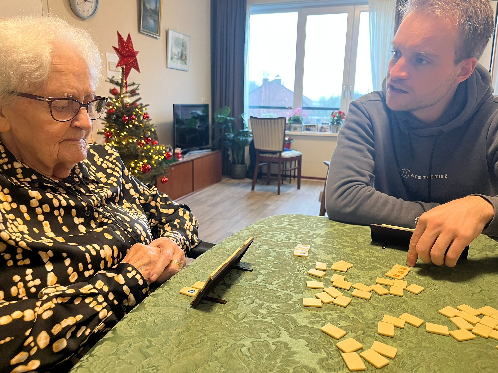
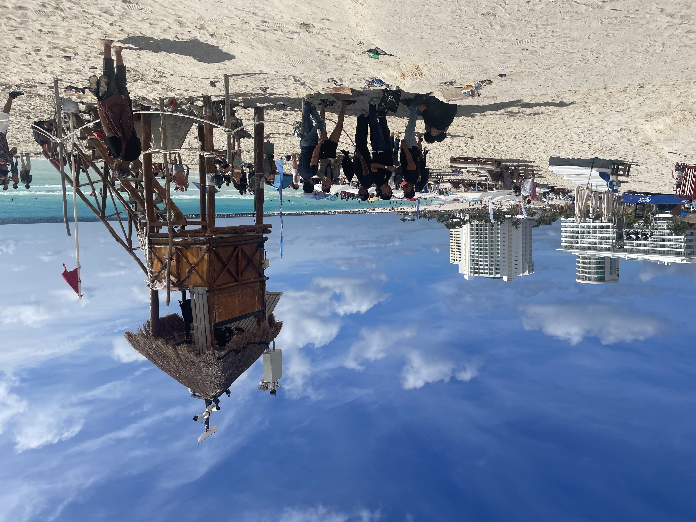
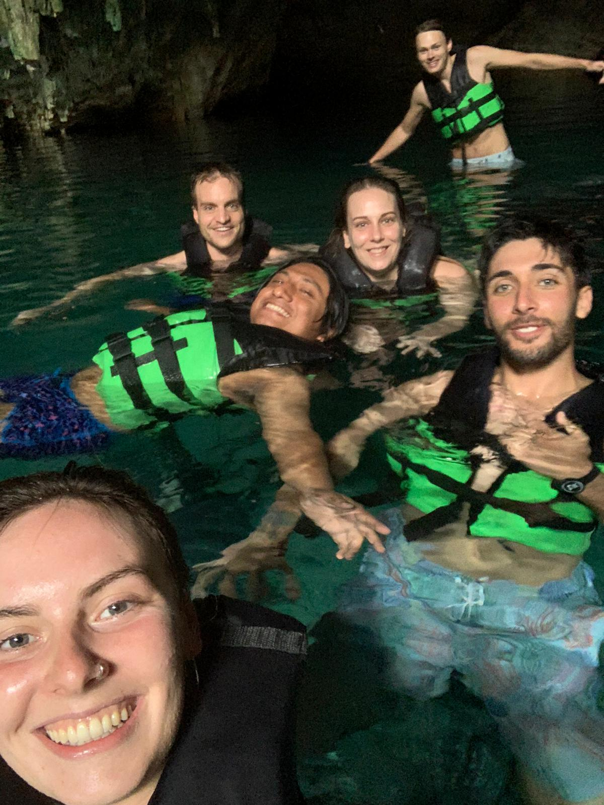
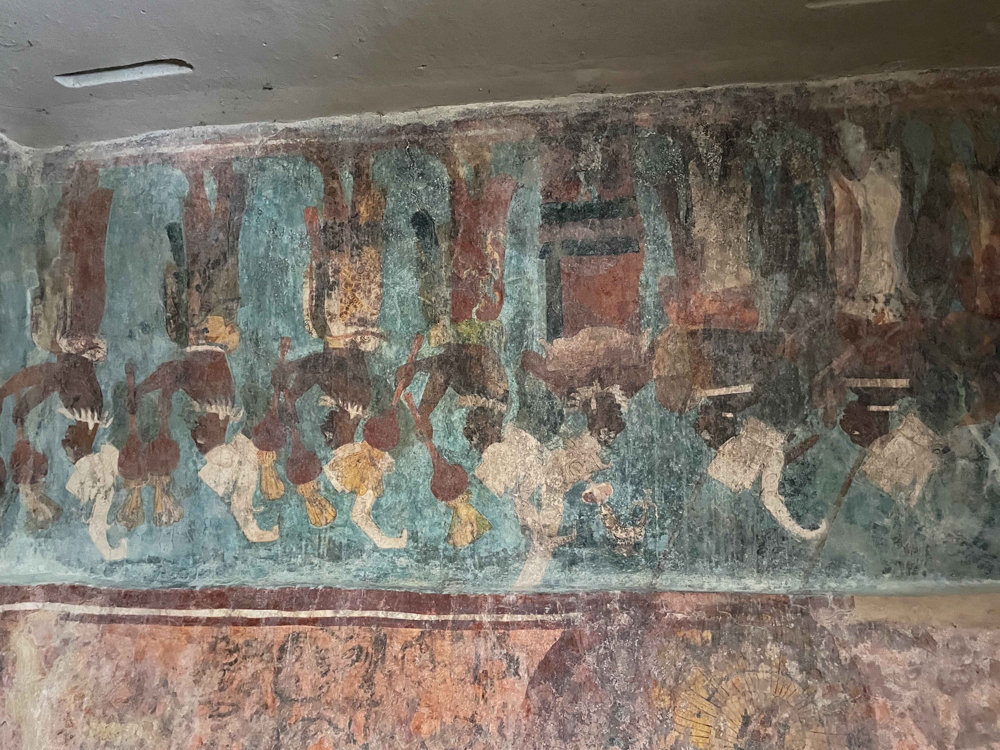

21 Backpacking
in Mexico
Winter in the Netherlands,
finally travelling again
metropolis approaching


Like I never had been away, that's what it was like to be back home in Bavel, with my mother, brothers and entourage. I visited friends Bouke, Mickel and Jordi. Bouke and I walked around Bavel and he gave me an update on where everyone lives these days. Time flies and many of my friends have lost their wild hair and are busy settling in and working on their houses. I helped my brother Sander assemble Ikea cabinets for the fourth location of his sports after-school care Teamplayers and I was able to talk to Piet, my mother's friend, about investing. Finally, I visited my dear grandmother, who is now 94 years old and unfortunately is becoming less and less fit. The 3.5 weeks were soon filled up because we went away for a weekend with the family, and of course we celebrated Christmas. It was great fun, although I sometimes found myself on edge because the many social activities were a bit overwhelming every now and then. Especially during the weekend away or during Christmas, I notice that it takes a lot of energy to keep going for so long. Maybe it's a bit strange that it's so difficult for me, because they're all very pleasant days. But I notice that I need a moment for myself every now and then, to recharge. For people who have no problem at all with being around people for a long time, that might be harder to understand. But it's getting harder and harder for me to stay sociable when I keep going all the time. Maybe that's what made it difficult for me in Paraguay, because people there always came together in large groups chatting for an unlimited amount of time. In recent years, I've noticed more and more often that I'm usually most at ease when I'm doing something in small groups. Maybe I'm a bit like my father in that respect. He wasn't really into large groups of friends and parties either. Dad, for example, liked to celebrate his birthday on a small scale with the family. I had a great time in the Netherlands, even in the middle of winter. And that it turned out to be a bit busier than expected, that is another lesson to perhaps do it a little differently next time.
I celebrated New Year's Eve at a unique location, namely on the plane from Amsterdam back to Latin America. I was handed champagne by the stewardess and toasted with the people sitting next to me to 2026. It was otherwise a terrible flight. First I was examined in an isolation cell, then I almost forgot my laptop in the customs tray. And during the flight through the night, the man behind me made a big deal out of it when I moved my seat back to sleep. Nevertheless, I arrived safely after a 15-hour flight. A new year, and also a new start for me as a digital nomad. I had left my suitcase at home and left with my backpack, which of course already indicated that the intention was to free up some extra time this time to visit beautiful places in addition to all that computer work. There are so many countries to choose from that you can go completely crazy. After much doubt between Brazil and Argentina, Mexico eventually emerged as the winner. Mexico is a very diverse country where fortunately Spanish is also spoken, and where both tourists and locals can be found to meet. Of course, it has been quite a struggle to become a programmer in recent years, so the idea spontaneously arose to go backpacking for a while, where it was of course not a bad thing that I would also get to know the country a little bit.
When I arrived in the Mexican resort of Cancun, located in the southeastern province of Yucatan, it was strangely enough still only 31 December 8pm, so I could once again prepare to celebrate New Year's Eve. The first thing I noticed when I arrived in Mexico was how well organized everything was and also how quiet the local people were on the bus. I was a bit nervous because I hadn't been in a hostel for so long, but within 5 minutes I was asked by one of the groups of backpackers to join in a game of billiards. I really met some really nice inspiring people and had a nice chat. That's really great about hostels, that you can make contact so easily. Cancun is not only a convenient airport to fly to, but you are also right on the edge of the Caribbean and so you can go to a beautiful beach with a sky-blue sea. It is teeming with resorts and facilities, but a bit further on it was fortunately a bit quieter. I went swimming there with the Argentinian boy Santiago for a day and we tried to hitch a ride on the waves.
 Of course, all the shops were closed on January 1, so I had to survive my first day as a backpacker on wifi. As a backpacker, you really lose time on the most silly things. Looking for your food, arranging your laundry, planning your trip. It's quite a bit of work. The first stop was Holbox Island, where I went by ferry. I had a quiet Airbnb for myself for 2 days, close to the beach. I did a lot of sports there, and also had a canoe trip through mangrove forests with a guide who was really great. The biologist in me came out again there because of course there were a lot of special birds and other animals to see, such as the horseshoe crab. After that I traveled to Valladolid where I also met a really nice guy Marius who came from Germany and with whom I went to eat Flemish fries. Great to just talk about all sorts of everyday things like the Amsterdam dance event while you're so far away. He had already come up with a plan to visit a certain type of caves by bike that they call cenotes here. It was really nice to do that together. We were there so early that we had the cenote all to ourselves.
Of course, all the shops were closed on January 1, so I had to survive my first day as a backpacker on wifi. As a backpacker, you really lose time on the most silly things. Looking for your food, arranging your laundry, planning your trip. It's quite a bit of work. The first stop was Holbox Island, where I went by ferry. I had a quiet Airbnb for myself for 2 days, close to the beach. I did a lot of sports there, and also had a canoe trip through mangrove forests with a guide who was really great. The biologist in me came out again there because of course there were a lot of special birds and other animals to see, such as the horseshoe crab. After that I traveled to Valladolid where I also met a really nice guy Marius who came from Germany and with whom I went to eat Flemish fries. Great to just talk about all sorts of everyday things like the Amsterdam dance event while you're so far away. He had already come up with a plan to visit a certain type of caves by bike that they call cenotes here. It was really nice to do that together. We were there so early that we had the cenote all to ourselves.
 You can't visit the province of Yucatan without learning about the Maya. It had fascinated me right away when I read about it, and now the old Mayan city and wonder of the world, Chitzen Itza, was on the schedule to visit. I was there an hour early because I didn't realize that there is a one-hour time difference between Cancun and Valladolid, which is only a few hours' drive away. I thought the famous pyramid, which actually consists of 3 pyramids built on top of each other, was really phenomenal. I had already prepared myself for it to be touristy and in the end I thought it was all not too bad. It really is a very large complex of temples with hieroglyphs in the middle of nature. The Mayan cities are connected to each other all the way to Costa Rica, which makes their story so special. It wasn't just any tribe, they really thought about everything very well. After that I went to a museum, where I talked for an hour with a museum employee who knew a lot about it. He told me that the Mayans sacrificed people by throwing them in those cenotes, which was seen as a huge honor. He also said that people ate a piece of placenta as part of a ritual. It's incomprehensible that this was 'normal' for people at that time.
You can't visit the province of Yucatan without learning about the Maya. It had fascinated me right away when I read about it, and now the old Mayan city and wonder of the world, Chitzen Itza, was on the schedule to visit. I was there an hour early because I didn't realize that there is a one-hour time difference between Cancun and Valladolid, which is only a few hours' drive away. I thought the famous pyramid, which actually consists of 3 pyramids built on top of each other, was really phenomenal. I had already prepared myself for it to be touristy and in the end I thought it was all not too bad. It really is a very large complex of temples with hieroglyphs in the middle of nature. The Mayan cities are connected to each other all the way to Costa Rica, which makes their story so special. It wasn't just any tribe, they really thought about everything very well. After that I went to a museum, where I talked for an hour with a museum employee who knew a lot about it. He told me that the Mayans sacrificed people by throwing them in those cenotes, which was seen as a huge honor. He also said that people ate a piece of placenta as part of a ritual. It's incomprehensible that this was 'normal' for people at that time.
I get into the backpacker flow a bit better and I even stay 3 days in party hostel Che in Merida where I spend the days with Piere from Scotland and Jay and Sky from England. Then I travel with the brand new Maya train that will open in December 2024, from Merida to Palenque. I have to laugh at the names of the provinces we cross: Yucatan, Tabasco and Chipas. Those names alone radiate the rich Mexican culture to me, and I haven't even mentioned the delicious food. From the train I look at the small villages, the contrast between the train for the elite and the villages with poor people could hardly be greater. We approach our final destination Palenque. A gentleman I meet on the train is so kind to walk with me to my hostel, since it is already dark. At some point you have seen so many Maya ruins and cenotes that you become a bit saturated. But the Palenque ruins are really in the middle of the jungle. I could walk there from a jungle shelter. Walking to these ruins, 2 toucans fly over with a beak as big as their body. A beautiful moment. I actually regretted that I had booked a tour to the ruins of Yaxchilan after this, because I had already seen so many, but this turned out to be perhaps my favorite day in Mexico. Because our guide really knew everything about nature and we had to drive 4 hours to the border at Guatemala. Because the ruins could only be visited by boat, we had to sail across the river and saw all kinds of crocodiles on the way. This abandoned city was also really worth visiting because, apart from a few howler monkeys, there was again absolutely no one there.
These were 2 fantastic backpacking weeks. The backpackers I met will soon be returning home while I stay here in Mexico. I still remember that I actually found Barcelona, a city of 1 million people, to be on the busy side. But what I have noticed most of all after my time in Paraguay, where it was so small-scale, is that I really long to be an anonymous number in a very big city again. Nice to pick up programming again and see if I can enjoy dancing again. That is why the big Mexico City came into the picture. It remains a gamble and I am curious whether it will work out there. While backpacking I met a boy Ernesto, a Mexican boy from northern Mexico, who lives in Mexico City and helped me a lot with some starting tips. So tomorrow I will travel from San Cristobal de Las Casas to Mexico City where new adventures will be waiting for me.